<!DOCTYPE html>
<html lang="ml">
<head>
  <meta charset="utf-8">
  <meta name="viewport" content="width=device-width, initial-scale=1.0">
  <title>Pages 81-100 - Class 7 Social science</title>
  <style>

:root {
  --bg-color: #fcfcfd;
  --card-bg: #ffffff;
  --text-color: #1e293b;
  --text-muted: #64748b;
  --primary-color: #0284c7;
  --primary-light: #e0f2fe;
  --border-color: #e2e8f0;
  --radius: 10px;
  --shadow: 0 4px 6px -1px rgb(0 0 0 / 0.05), 0 2px 4px -2px rgb(0 0 0 / 0.05);
}

body {
  font-family: -apple-system, BlinkMacSystemFont, "Segoe UI", Roboto, "Noto Sans Malayalam", "Manjari", "Gayathri", sans-serif;
  background-color: var(--bg-color);
  color: var(--text-color);
  line-height: 1.8;
  font-size: 1.1rem;
  margin: 0;
  padding: 0;
}

.container {
  max-width: 860px;
  margin: 0 auto;
  padding: 2.5rem 1.5rem 5rem 1.5rem;
}

header {
  margin-bottom: 2.5rem;
  padding-bottom: 1.5rem;
  border-bottom: 2px solid var(--border-color);
}

.badge-row {
  display: flex;
  gap: 0.5rem;
  margin-bottom: 0.75rem;
  flex-wrap: wrap;
}

.badge {
  display: inline-block;
  font-size: 0.75rem;
  font-weight: 700;
  text-transform: uppercase;
  letter-spacing: 0.05em;
  padding: 0.25rem 0.65rem;
  border-radius: 9999px;
  background: var(--primary-light);
  color: var(--primary-color);
}

.badge-medium {
  background: #fef3c7;
  color: #b45309;
}

.badge-class {
  background: #dcfce7;
  color: #15803d;
}

h1 {
  font-size: 2.1rem;
  font-weight: 800;
  margin: 0.5rem 0 1rem 0;
  line-height: 1.3;
  color: #0f172a;
}

.nav-bar {
  display: flex;
  justify-content: space-between;
  margin: 1.5rem 0;
  font-size: 0.95rem;
  flex-wrap: wrap;
  gap: 0.5rem;
}

.nav-bar a {
  color: var(--primary-color);
  text-decoration: none;
  font-weight: 600;
  padding: 0.5rem 1rem;
  border-radius: var(--radius);
  background: var(--card-bg);
  border: 1px solid var(--border-color);
  transition: all 0.2s ease;
}

.nav-bar a:hover {
  background: var(--primary-light);
  border-color: var(--primary-color);
}

.nav-bar .disabled {
  color: var(--text-muted);
  pointer-events: none;
  border-color: transparent;
  background: transparent;
}

.page-section {
  background: var(--card-bg);
  border: 1px solid var(--border-color);
  border-radius: var(--radius);
  box-shadow: var(--shadow);
  padding: 2rem;
  margin-bottom: 2.5rem;
}

.page-header {
  display: flex;
  align-items: center;
  justify-content: space-between;
  margin-bottom: 1.25rem;
  padding-bottom: 0.5rem;
  border-bottom: 1px dashed var(--border-color);
}

.page-number {
  font-size: 0.8rem;
  font-weight: 700;
  text-transform: uppercase;
  color: var(--text-muted);
  letter-spacing: 0.05em;
}

.page-content p {
  margin: 0 0 1.25rem 0;
  white-space: pre-wrap;
  word-break: break-word;
}

.page-content p:last-child {
  margin-bottom: 0;
}

.diagram-card {
  margin: 2rem 0;
  text-align: center;
  background: #f8fafc;
  border: 1px solid var(--border-color);
  border-radius: var(--radius);
  padding: 1rem;
  overflow: hidden;
}

.diagram-card img {
  max-width: 100%;
  height: auto;
  border-radius: calc(var(--radius) - 4px);
  display: inline-block;
  box-shadow: 0 2px 4px rgba(0,0,0,0.04);
}

.diagram-card figcaption {
  font-size: 0.85rem;
  color: var(--text-muted);
  margin-top: 0.75rem;
  font-weight: 500;
}

footer {
  margin-top: 3rem;
  padding-top: 2rem;
  border-top: 2px solid var(--border-color);
}

  </style>
</head>
<body>
  <div class="container">
    <header>
      <div class="badge-row">
        <span class="badge badge-class">Class 7</span>
        <span class="badge badge-medium">Malayalam Medium</span>
        <span class="badge">Social science</span>
        <span class="badge">Part 1</span>
      </div>
      <h1>Pages 81-100</h1>
      <div class="nav-bar"><a href="part_1_pages_6180.html">← Pages 61-80</a><a href="index.html">☰ Index</a><a href="part_1_pages_101112.html">Pages 101-112 →</a></div>
    </header>
    <main>
<section class="page-section" id="page-81">
  <div class="page-header"><span class="page-number">Page 81</span></div>
  <figure class="diagram-card" id="fig_ch05_p081_01"><figcaption>Figure fig_ch05_p081_01 (Page 81)</figcaption></figure>
  <figure class="diagram-card" id="fig_ch05_p081_02"><figcaption>Figure fig_ch05_p081_02 (Page 81)</figcaption></figure>
  <figure class="diagram-card" id="fig_ch05_p081_03"><figcaption>Figure fig_ch05_p081_03 (Page 81)</figcaption></figure>
  <figure class="diagram-card" id="fig_ch05_p081_04"><figcaption>Figure fig_ch05_p081_04 (Page 81)</figcaption></figure>
  <figure class="diagram-card" id="fig_ch05_p081_05"><figcaption>Figure fig_ch05_p081_05 (Page 81)</figcaption></figure>
  <figure class="diagram-card" id="fig_ch05_p081_06"><figcaption>Figure fig_ch05_p081_06 (Page 81)</figcaption></figure>
  <figure class="diagram-card" id="fig_ch05_p081_07"><figcaption>Figure fig_ch05_p081_07 (Page 81)</figcaption></figure>
  <figure class="diagram-card" id="fig_ch05_p081_08"><figcaption>Figure fig_ch05_p081_08 (Page 81)</figcaption></figure>
  <figure class="diagram-card" id="fig_ch05_p081_09"><figcaption>Figure fig_ch05_p081_09 (Page 81)</figcaption></figure>
  <figure class="diagram-card" id="fig_ch05_p081_10"><figcaption>Figure fig_ch05_p081_10 (Page 81)</figcaption></figure>
  <figure class="diagram-card" id="fig_ch05_p081_11"><figcaption>Figure fig_ch05_p081_11 (Page 81)</figcaption></figure>
  <div class="page-content">
    <p>eŦŽœäˆš‘›s‘ce“¡} –“›¢”•‚s‘Œš§x“¡} ¢xÅĹ›Ğǫ‚§<br>e“¢xŽcˆ}›¢xÅ¡Ĺ’‚s<br>z<br>iŽcsž}¢Ŧšc‚šˆ†›“Å…›Úų<br>z<br>‚šˆ†›nǮ“c sĚˆš‘›<br>z<br>iÆÚsÇsś㚎Œšsųˆš‘›<br>z<br>“š‚ŶšŅsÇ⢌sĚ§<br>Š—›Žšsš”Ĺ›¢Ú§›Úų<br>z<br>iŽâŒĹ›††–Ž›ă§pŽ†›DŽ›‚<br>¢‚š‚›Æ‚šˆcsųˆš‘›<br>z<br>q¢–šÃ“š‚s –šų›…DZŒǫ ¢Œt<br>z<br>80 s›¢šŒœǮÅŒ‚Æ400 s›¢šŒœǮÅ“¡Ž<br>iŽĹ›ÆǙ›‚›¡xƭų<br>ms§¢–šǝ›Å<br>¡‚Å¢Œšǝ›Å<br>Œ›¢–šǝ›Å<br>–§ğš¢Ǯšǝ›Å<br>¢ğš¢ƀšǝ›Å<br>‹žŒ›¡}iǫeŦŽœäceŦŽœäˆš‘›sÇg“¡} –“›¢”•‚sÇmų›“<br>†ǰ “›”„Œš›xÅă¡xƪ¢Ƽš‹žŒ››Æ––DZzŦzšā‘¡} †›†›Æƀ§<br>–š…DZŒšÚų‚›ÆeŦŽœäś¡źc ‹­¢ŒšˆŽ›‚ –“›¢”•‚s‘¢}c ˆÿ§<br>†›ÅĴšsŒš§<br>‚}ÅƂ“ÅņāÇ<br>z<br>‹žŒ›¡}v}†¡} ŒšĶs †›Åƣ›ă§–šŒž—DZ”šȻšŠ›ÆƂ„Å”›ƀ›Úž<br>z<br>gźÅ¡†Ǯ›¡ź –—š¢Ĺš¡} £ǟsÇ ‚ƭššÚ› ‹žŒ›¡} v}†<br>–“›¢”•‚mų›““›”„œsŽ›Úž<br>z<br>eŦŽœäv}†–“›¢”•‚mų›“iÇ¡ƀ}Ĺ›pŽiˆ†DZš–c‚ƭššÚ›<br>㚖§Œ››Æe“‚Ž›ƀ›Úž<br>†ƣ¡}‹žŒ›<br>81</p>
  </div>
</section>
<section class="page-section" id="page-82">
  <div class="page-header"><span class="page-number">Page 82</span></div>
  <figure class="diagram-card" id="fig_ch05_p082_01"><figcaption>Figure fig_ch05_p082_01 (Page 82)</figcaption></figure>
  <figure class="diagram-card" id="fig_ch05_p082_02"><figcaption>Figure fig_ch05_p082_02 (Page 82)</figcaption></figure>
  <figure class="diagram-card" id="fig_ch05_p082_03"><figcaption>Figure fig_ch05_p082_03 (Page 82)</figcaption></figure>
  <figure class="diagram-card" id="fig_ch05_p082_04">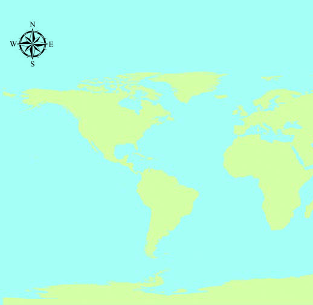<figcaption>Figure fig_ch05_p082_04 (Page 82)</figcaption></figure>
  <figure class="diagram-card" id="fig_ch05_p082_05">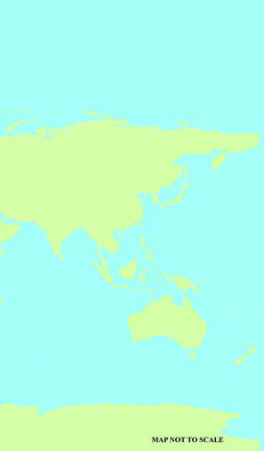<figcaption>Figure fig_ch05_p082_05 (Page 82)</figcaption></figure>
  <div class="page-content">
    <p>6<br>gŦDzÄiˆ‹žtįc<br>†ǰ“–›Úų‹žŒ›¡}Œžų›ÆŽĬ‹šu“c–ŒŝŒš§ˆ¢ˆŽs‘›Æ<br>e›¡ƀ}ų¡“ÿ›ce“¡ƼǰˆŽǜŽcŠŰ¡ƀНs›}ڝų–Œŝ¡Œš’›¡sǫ<br>‹žŒ›¡}‹šucsŽš§<br>mųšÆ–ŒŝāÇ¢ˆš¡sŽ‹šuāÇ‚ƣ›Æ¢xÅųš¢šǙ›‚›¡xƭų‚§ ?<br>“›”šŒšsŽ¡}‹šuā¡‘ÍsŽ¡}s•āÇÎmųeÅƒĹ›Æ‹žtįāÇ<br>eƒ“š“ÄsŽsÇmų§“›‘›Úų“DZ‚DZǘ‹žƂՂ›“›‹šuā¡‘iǡښǫų<br>“›¡šŽsŽ‹šuŒš§‹žtįciŽ¢Œ›ˆÅ“‚āÇ“›”šŒš –Œ‚āÇ<br>‹žtįā‘c–Œŝ“c<br>fÅĞ›s§Œ—š–Œŝc<br>q–§¢ğ›<br>eźšÅĞ›Ú<br>fƋ›Ú<br>ˆ–›‰›s§<br>Œ—š–Œŝc<br>gŦDzÄ<br>Œ—š–Œŝc<br>ˆ–›‰›s§<br>Œ—š–Œŝc<br>ž¢šƀ§<br>n•Dz<br>eǯ§šź›s§<br>Œ—š–Œŝc<br>“}¢Ú<br>e¢ŒŽ›Ú<br>¡‚¢Ú<br>e¢ŒŽ›Ú<br>x›Ņc6.1</p>
  </div>
</section>
<section class="page-section" id="page-83">
  <div class="page-header"><span class="page-number">Page 83</span></div>
  <figure class="diagram-card" id="fig_ch05_p083_01"><figcaption>Figure fig_ch05_p083_01 (Page 83)</figcaption></figure>
  <figure class="diagram-card" id="fig_ch05_p083_02"><figcaption>Figure fig_ch05_p083_02 (Page 83)</figcaption></figure>
  <div class="page-content">
    <p>gŦDzÄiˆ‹žtįc<br>83<br>“›ɀ‚ŒšŒŽ‹žŒ›sLjœ~‹žŒ›sÇŒ‚šˆ‹žŽžˆā‘c†ŒÚ§‹žtįā‘›Æ<br>sššÄ–š…›Úc†Æs››Ğǫ‹žˆ}c(x›Ņc6.1),¢øšŠ§mų›“ †›Žœä›ă§“›“›…<br>‹žtįāLjЛs¡ƀ}Ĺž.g‚›Æ†ƣ¡} ŽšzDZŒšgŦDZn‚§‹žtįśš§<br>Ǚ›‚›¡xƭų‚§mų§s¡ĬŞ<br>iˆ‹žtįc<br>‹žtįā‘›¢‚§ ¢ˆš¡ ‚¡ų £““›…DZŒšÅų ‹žƂՂ› “›‹šuā‘c<br>sšš“Ǚciǫ“›”š‹žtį‹šuā¡‘Íiˆ‹žtįÎāÇ(Subcontinents)<br>mų§“›¢”•›ƀ›ÚųˆšŒœÅˆœ~‹žŒ›š§<br>n•DZ‹žtįś¡ź¡‚ڝ‹šu¡Ĺg‚Ž<br>‹šuā‘›Æ†›ųc‹žŒ›”šȻˆŽŒš›¢“›Ğ§<br>†›Åŝų‚§ių‚ŒšˆÅ“‚”›tŽāÇ<br>“›”šŒš–Œ‚āÇŒŽ‹žŒ›Ƃ¢„”āÇ<br>sš~›†DZ¢Œ› ”›s‘šÆ †›Åƣ›‚Œš<br>ˆœ~‹žŒ› Ƃ¢„”āÇ ‚œŽ–Œ‚āÇ<br>„ǴœˆsÇg“¡š¡ÚiÇ¡ƀ}ų‚š§gŦDZÄiˆ‹žtįś¡ź‹žƂՂ›<br>gŦDZÄiˆ‹žtįś¡ź“}¢Úe‚›Åś›Æ—›ŒšˆÅ“‚“c s›’¢Ú<br>e‚›Åś›ÆeŽÚĈœ‚†›Žs‘cˆ}›Ěš¢e‚›Åś›Æ—›ŭs•§<br>ˆÅ“‚†›ŽcǙ›‚›¡xƭųgŦDZÄiˆ‹žtįś¡ź¡‚¢Úe‚›Åś<br>gŦDZÄŒ—š–ŒŝŒš§<br>pŽŽšzDZś¡ź¢ˆŽ››¡ƀ}ųns–ŒŝŒš§gŦDZÄŒ—š–Œŝc<br>†Æs››Ğǫ‹žˆ}śÆx›Ņc6.2
†›ų§gŦDZÄiˆ‹žtįśÆiÇ¡ƀ}ų<br>ŽšzDZāÇ‚›Ž›ă›Œ¢Ƽš<br>z<br>gŦDZ<br>z Šcøš¢„”§<br>z <br>z<br>gŦDZÄiˆ‹žtįś¡ź“}Ú§‹šuŝǫˆÅ“‚†›ŽsÇn¡‚š¡Úš¡ų§<br>¢†šÚǰ‹žˆ}c(6.2) †›Žœä›ÚžˆšÚ›Ǚš†›Æ—›ŭs•§ˆÅ“‚†›ŽgŦDZ<br>¢†ƀšÇ‹žĞšÄmųœŽšzDZā‘›š›—›ŒšˆÅ“‚†›Žmų›“š“¢šsś¡<br>iŽ¢Œ›Œ›Ú ¡sš}Œ}›s‘chˆÅ“‚¢Œt›šǫ‚§<br>—›ŒšˆÅ“‚†›ŽsÇÚ§¡‚Ú§‹šuŧ“›”šŒš–Œ‚Ƃ¢„”Œšǫ‚§–›Ű<br>ucuƖǥˆŅmųœ†„›sÇ“—›ă¡sšĬ§“ųmÚƆ›¢äˆā‘šš§<br>e‚›“›”šŒšh–Œ‚cŽžˆ¡ƀЛНǫ‚§iŎ Œ—š–Œ‚cmų“›¢”•›ƀ›<br>ڝųh–Œ‚Ƃ¢„”āÇiˆ‹žtįś¡źs›’Ú§Œ‚ƈ}›Ěš§“¡Ž<br>“DZšˆ›ăs›}ڝų<br>Í¢šsś¡ź ¢ŒÆڞŽÎ mų§<br>“›¢”•›ƀ›Úų ˆšŒœÅ ˆœ~‹žŒ›<br>}›šÄ•šÄsšŽ¢ÚšcsÄžÃ<br>—›ŭs•§mųœˆÅ“‚†›Žs‘¡}<br>–cuŒǙš†Œš§</p>
  </div>
</section>
<section class="page-section" id="page-84">
  <div class="page-header"><span class="page-number">Page 84</span></div>
  <figure class="diagram-card" id="fig_ch05_p084_01">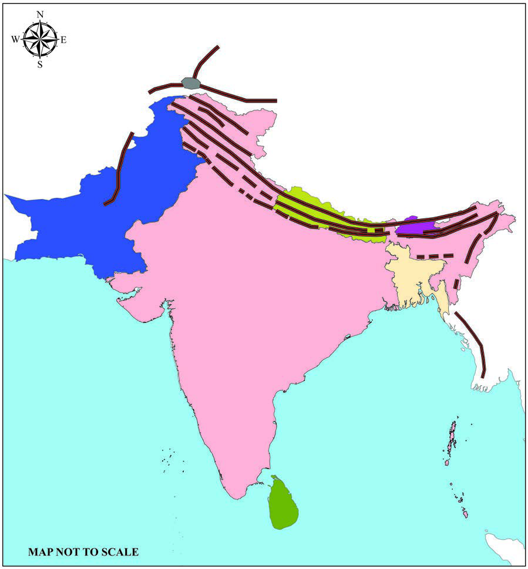<figcaption>Figure fig_ch05_p084_01 (Page 84)</figcaption></figure>
  <div class="page-content">
    <p>–šŒž—Dz”šȼc<br>- ‹šuc 1<br>84<br>VII<br>gŦDzÄiˆ‹žtįc<br>‹žĞšÄ<br>‹žĞšÄ<br>¢†ƀšÇ<br>¢†ƀšÇ<br>ˆšÚ›ǚšÄ<br>ˆšÚ›ǚšÄ<br>eŽÚĈœ‚c<br>eŽÚĈœ‚c<br>–ǘšÅ<br>–ǘšÅ<br>sŽ¢sšc<br>sŽ¢sšc<br>šÚ§<br>šÚ§<br>ˆšŒœÅˆœ~‹žŒ›<br>ˆšŒœÅˆœ~‹žŒ›<br>sÄÃ<br>sÄÃ<br>—›ŭs•§<br>—›ŭs•§<br>—›Œšc<br>—›Œšc<br>}›šÄ•šÄ<br>}›šÄ•šÄ<br>–£ŒšÄ¢ĕ§<br>–£ŒšÄ¢ĕ§<br>gŦDz<br>gŦDz<br>Njœÿ<br>Njœÿ<br>Šcøš¢„”§<br>Šcøš¢„”§<br>gŦDzÄŒ—š–Œŝc<br>gŦDzÄŒ—š–Œŝc<br>Œš›„ǵœˆ§<br>Œš›„ǵœˆ§<br>ä„ǵœˆ§gŦDz
<br>ä„ǵœˆ§gŦDz
<br>fÄŒšÄ†›¢ÚšŠšÅ„ǵœˆsÇ<br>fÄŒšÄ†›¢ÚšŠšÅ„ǵœˆsÇ<br>gŦDz
<br>gŦDz
<br>iĹ¢ŽŦDZÄ–Œ‚ā‘¡}–“›¢”•‚sÇm¡Ŧš¡Úš¡ų¢†šÚǰ<br> <br>z‰‹ž›ǏŒšŒĴ§<br>z†„›s‘šÆz–Ɯŗc<br> <br>z†›ŽƀšÅų‹žƂ¢„”c<br>zz††›Š›c<br>iŎŒ—š–Œ‚Ĺ›†¡‚ڝ‹šucˆœ~‹žŒ›š§g‚›†§–Œŝ†›Žƀ›Æ†›ųc<br>ns¢„”c150Œ‚Æ900ŒœǮÅ“¡ŽiŽŒǫ‚š›sÚšÚųn¡Ú¡<br>Ņ›¢sššÕ‚›ǫh‹ž‹šuś†§iˆ„Ǵœˆœˆœ~‹žŒ›mųš§¢ˆŽ§<br>x›Ņc6.2</p>
  </div>
</section>
<section class="page-section" id="page-85">
  <div class="page-header"><span class="page-number">Page 85</span></div>
  <figure class="diagram-card" id="fig_ch05_p085_01"><figcaption>Figure fig_ch05_p085_01 (Page 85)</figcaption></figure>
  <figure class="diagram-card" id="fig_ch05_p085_02"><figcaption>Figure fig_ch05_p085_02 (Page 85)</figcaption></figure>
  <figure class="diagram-card" id="fig_ch05_p085_03">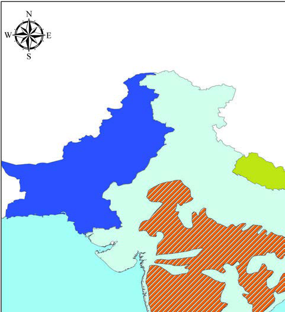<figcaption>Figure fig_ch05_p085_03 (Page 85)</figcaption></figure>
  <figure class="diagram-card" id="fig_ch05_p085_04">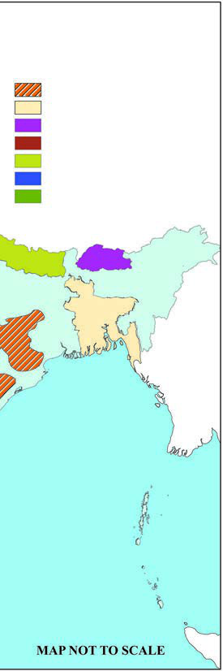<figcaption>Figure fig_ch05_p085_04 (Page 85)</figcaption></figure>
  <figure class="diagram-card" id="fig_ch05_p085_05">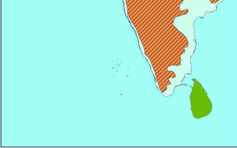<figcaption>Figure fig_ch05_p085_05 (Page 85)</figcaption></figure>
  <div class="page-content">
    <p>gŦDzÄiˆ‹žtįc<br>85<br>‹žˆ}ś¡ź–—š¢Ĺš¡}iˆ„Ǵœˆœˆœ~‹žŒ›¡}<br>Ǚš†cs¡Ĭŝs<br>x›Ņc 6.3<br>gŦDzÄiˆ‹žtįc<br>‹žĞšÄ<br>‹žĞšÄ<br>¢†ƀšÇ<br>gŦDz<br>Šcøš¢„”§<br>ˆšÚ›ǚšÄ<br>ˆšÚ›ǚšÄ<br>Njœÿ<br>gŦDzÄŒ—š–Œŝc<br>Œš›„ǵœˆ§<br>ä„ǵœˆ§gŦDz
<br>iˆ„ǵœˆ›ˆœ~‹žŒ›<br>Šcøš¢„”§<br>‹žĞšÄ<br>Œš›„ǵœˆ§<br>¢†ƀšÇ<br>ˆšÚ›ǚšÄ<br>Njœÿ<br>–žx›s<br>fÄŒšÄ†›¢ÚšŠšÅ„ǵœˆsÇ<br>gŦDz
<br>iˆ„Ǵœˆœˆœ~‹žŒ›¡} “}ڝˆ}›Ěšš›gŦDZ›c ˆšÚ›Ǚš†›Œš›<br>“DZšˆ›ăs›}ڝų “ŽĬ‹žƂ¢„”Œš§ƒšÅŒŽ‹žŒ›“‘¡Ž“›Ž‘Œš›ŒšŅc<br>Œ’‹›ÚųhƂ¢„”ŧsǫ›ŒÇ¡ă}›s‘csǮ›¡ă}›s‘Œš§–Ǵš‹š“›s<br>––DZzšāÇ<br>x›Ņc(6.3) †›Žœä›ÚžgŦDZÄiˆ‹žtįś†§£„ÅvDZ¢Œ›‚œŽƂ¢„”Œšǫ‚§<br>Œš›„Ǵœˆ§NJœÿmųœ„Ǵœˆ§Žšȸā‘cä„Ǵœˆ§fÄŒšÄ†›¢ÚšŠšÅ‚}ā›<br>¡x›„Ǵœˆ–Œž—ā‘cgŦDZÄiˆ‹žtįś¡ź‹šuŒš§<br>†Æs››Ğǫx›ŅāÇ(6.4, 6.5) ‚šŽ‚ŒDZc¡xƪ§e“n¡‚š¡Ú‹žƂ¢„”ā‘›¡<br>z†zœ“›‚¡Ĺ –žx›ƀ›Úųmų§‚›Ž›ă›s<br>iˆ„Ǵœˆœˆœ~‹žŒ›</p>
  </div>
</section>
<section class="page-section" id="page-86">
  <div class="page-header"><span class="page-number">Page 86</span></div>
  <figure class="diagram-card" id="fig_ch05_p086_01"><figcaption>Figure fig_ch05_p086_01 (Page 86)</figcaption></figure>
  <figure class="diagram-card" id="fig_ch05_p086_02"><figcaption>Figure fig_ch05_p086_02 (Page 86)</figcaption></figure>
  <figure class="diagram-card" id="fig_ch05_p086_03"><figcaption>Figure fig_ch05_p086_03 (Page 86)</figcaption></figure>
  <figure class="diagram-card" id="fig_ch05_p086_04"><figcaption>Figure fig_ch05_p086_04 (Page 86)</figcaption></figure>
  <figure class="diagram-card" id="fig_ch05_p086_05"><figcaption>Figure fig_ch05_p086_05 (Page 86)</figcaption></figure>
  <figure class="diagram-card" id="fig_ch05_p086_06"><figcaption>Figure fig_ch05_p086_06 (Page 86)</figcaption></figure>
  <figure class="diagram-card" id="fig_ch05_p086_07"><figcaption>Figure fig_ch05_p086_07 (Page 86)</figcaption></figure>
  <figure class="diagram-card" id="fig_ch05_p086_08"><figcaption>Figure fig_ch05_p086_08 (Page 86)</figcaption></figure>
  <div class="page-content">
    <p>–šŒž—Dz”šȼc<br>- ‹šuc 1<br>86<br>VII<br>x›Ņc6.4<br>x›Ņc6.5<br>gŦDZÄiˆ‹žtįś†§‚†‚š sšš“Ǚš–“›¢”•‚s‘šǫ‚§<br>sšš“Ǚ›Æ Ƃš¢„”›s £““›…DZāÇ †›†›Æڝ¢Ơš’c gŦDZÄ<br>iˆ‹žtįś¡ sšš“Ǚ ¡ˆš‚¢“͌֞Ãsšš“ǙÎmų›¡ƀ}ų<br>k‚ÚÇmų§eŃc“Žų͌­–›cÎmųeŠ§ˆ„Ĺ›Æ†›ųš§ŒÃ–žÃ<br>mų“šÚ§Žžˆ¡ƀĞ‚§gŦDZÄiˆ‹žtįś¡źsšš“Ǚ¡ ŒÃ–žÃsšǮ§<br>–Ǵš…œ†›ÚųhsšǮ§k‚ÚÇچ–Ž›ă§„›” Œšų“š§<br>eŠ§–ĕšŽ›cm’ĹsšŽ†ŒšeÆŒ–ž„›¡}Ղ›s‘›Æ<br>k‚¢‹„āÇچ–Ž›ă§„›”ŒšųŒÃ–žÃsšǮs¡‘ڝ›ă§<br>Ƃ‚›ˆš„›ÚųĬ§<br>–žŽDZ¡źe†cŒžciŎš† sšĹ§<br>–žŽDZ¡ź Ǚš†c iˆ‹žtįś†§<br>Œs‘›š›Ž›Ú¢ƠšÇsŽ‹šu¡Ĺ “š<br>xž}ˆ›}›ă§Œs‘›¢Ú§iŽųg“›¢}Ú§<br>–ŒŝśÆ †›ų§ hÅƀc †›Ě<br>sšǮ§“œ”sciˆ‹žtįś¡źˆ<br>‹šuā‘›c Œ’‹›Úsc ¡xƭų<br>¡Œ§zžÃŒš–ā‘›Æ¡‚Ú§ˆ}›Ěš§<br>„›”›ÆgŦDZÄ–ŒŝśÆ†›ųc<br>iˆ‹žtįś¢Ú§“œ”ųsšǮsÇ<br>gŦDZÄiˆ‹žtįśÆ“DZšˆsŒš<br>Œ’Ʃ§sšŽŒšsų<br>„䛁š† –ŒĹ§–žŽDZ¡źǙš†c<br>gŦDZÄ–Œŝś†§Œs‘›šs¢ƠšÇ<br>–Œ¢ŝšˆŽ›‚Ĺ›¡ “šxž}ˆ›}›ă§iŽscg“›¢}Ú§iŎ„›Ú›Æ†›ųǫ<br>sšǮ§“œ”sc ¡xƭų¡–ˆ§ǮcŠÅp¢ÜšŠÅŒš–ā‘›Æ“}ڝs›’Ú§†›ų§<br>–žŽDz¡źe†c<br>–žŽDZ¡źf¢ˆä›sǙš†ciŎš<br>†¢ŽtƩc (23½0“}Ú§
„䛁š†<br>¢ŽtƩc<br>(23½0¡‚Ú§
 g}›Æ<br>Œš›¡ÚšĬ›Ž›ÚųƂ‚›‹š–Œš§<br>e†c ‹žŒ›¡} ˆŽ›âŒ“c<br>‹žŒ›¡}e㝂Ĭ›¡źxŽ›“cf§<br>gŎśÆ –žŽDZ†§ Ǚš†ŒšǮc<br>iĬšsų‚š›e†‹“¡ƀ}ų‚›†§<br>sšŽc</p>
  </div>
</section>
<section class="page-section" id="page-87">
  <div class="page-header"><span class="page-number">Page 87</span></div>
  <figure class="diagram-card" id="fig_ch05_p087_01"><figcaption>Figure fig_ch05_p087_01 (Page 87)</figcaption></figure>
  <figure class="diagram-card" id="fig_ch05_p087_02"><figcaption>Figure fig_ch05_p087_02 (Page 87)</figcaption></figure>
  <div class="page-content">
    <p>gŦDzÄiˆ‹žtįc<br>87<br>¡‚Ú§ˆ}›Ěš¢šĞ§“œ”ųhsšǮsÇ¡ˆš‚¢“ “ŽĬ‚š‚›†šÆŒ’¡}<br>e‘“§s“š›Ž›ÚcmųšÆŠcušÇiÇÚ}›Æ†›ųc †œŽš“›fu›Žc<br>¡xƭų¢‚š¡}iˆ„Ǵœˆœ‹šuś¡źs›’ÚÄ‚œŽā‘›Æ“DZšˆsŒšŒ’Ʃ§<br>sšŽŒšsų<br>gŦDZÄiˆ‹žtįśÆmƼš›}ŝcp¢Že‘“›Ƽ Œ’‹›Úų¡‚ų§<br>Œ†Ǡ›š›¢Ƽ ?<br>sšš“Ǚ¡ –Ǵš…œ†›Úų v}sāÇn¡‚š¡Úš¡ų§¢†šÚǰ<br>pŽƂ¢„”Ĺ›¡ź<br>z eäǰ” Ǚš†c<br>z –Œŝ†›Žƀ›Æ†›ųǫiŽc<br>z ‹žƂՂ›<br>z –Œŝś¡ź–šŒœˆDZc<br>z sšǮ§<br>Ƃ…š†eäǰ”¢ŽtšiŎš†¢ŽtƩ›Ž“”“c “DZ‚DZǘsšš“Ǚš§<br>e†‹“¡ƀ}ų‚§iŎš†¢ŽtƩ“}ڝ‹šuŧŒ›¢‚šǑsšš“Ǚc ¡‚ڝ<br>‹šuŧiǑsšš“ǙŒš§e†‹“¡ƀ}ų‚§<br>iǑ¢Œt›Æ£”‚DZsšĹciǑsšĹce†‹“¡ƀ}ų ‚šˆ†››¡<br>eŦŽc¡ˆš‚¢“ Œ›‚Œš›Ž›ÚcmųšÆŒ›¢‚šǑ¢Œt›Æ£”‚DZsš¢Ĺc<br>iǑsš¢Ĺc ‚šˆ†››¡eŦŽc¡ˆš‚¢“ sž}‚š›Ž›Úc<br>ŒžųšÅu“¡ĵź§¢ŒšÆ–›ĕDZÆǗž‘›Æˆ~›Úų „›‚›Ž“ŦˆŽ¡Ĺ<br>‚¡ź“œĞ›¢Ú§m’‚›sś¡źsă§‹šuāÇ“š›ă¢†šÚž<br>Ƃ›¡ƀĞe†zś<br><br>†›†Ú§ –tŒš¡ų§<br>“›”Ǵ–›Úų ˆsÆ 㚖›<br>›Ž›Ú¢ƠšÇ ¢ˆšc |šÄ<br>sƠ›‘›<br>“Ȼc<br>…Ž›ăš§<br>gŽ›Úų‚§ ‚ƀ§ “‘¡Ž<br>sž}‚š‚›†šÆ ŽšŅ››Æ<br>ŽĬ<br>ˆ‚ƀ§<br>ˆ‚¢ƩĬ<br>e“Ǚš§“œĞ›š›Žų<br>¢ƀšÇŽšŅ››Æ¢ˆšc‰šÄ<br>iˆ¢šu›ă›Žųm†›Ú§g‚§<br>fDŽŽDZŒš§ ˆă ¡“ǫ<br>śÆs‘›ă›Žųm†›Ú§<br>g¢ƀšÇ e‚§ qÅڝ“šÄ<br>sž}›–š…›Úų›Ƽe“…›Ʃ§<br>‚›Ž“†ŦˆŽ¢ĹƩ§“Ž¢ƠšÇ<br>g“›¡}Օ›¡xƭųfƀ›‘c<br>–§¢ğš¡Š›c ¡sšĬ“Žǰ<br>†ƣ¡} xž}§sšš“Ǚ›Æe“<br>“‘Žs›Ƽdz¢Ƽš</p>
  </div>
</section>
<section class="page-section" id="page-88">
  <div class="page-header"><span class="page-number">Page 88</span></div>
  <figure class="diagram-card" id="fig_ch05_p088_01">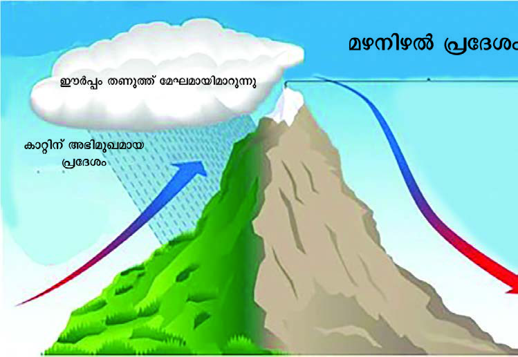<figcaption>Figure fig_ch05_p088_01 (Page 88)</figcaption></figure>
  <figure class="diagram-card" id="fig_ch05_p088_02"><figcaption>Figure fig_ch05_p088_02 (Page 88)</figcaption></figure>
  <div class="page-content">
    <p>–šŒž—Dz”šȼc<br>- ‹šuc 1<br>88<br>VII<br>ŒžųšÅjĞ›‚}ā› Ǚā‘›ÆmŦ¡sšĬš§‚Ĺ sšš“Ǚ<br>e†‹“¡ƀ}ų¡‚ų§†›āÇx›Ŧ›ă›Ğ¢Ĭš ?s’›Ěe…DZšĹ›Æ⌌š<br>‚šˆ†Ǐ†›ŽÚ›¡†Ú›ă§ˆ~›ă‚§qÅڝŒ¢Ƽš ?<br>sšš“Ǚ¡ –Ǵš…œ†›ÚųŒ¡ǮšŽƂ…š† v}sŒš§‹žƂՂ›hÅƀ“š—›š<br>sšǮ›¡ź„›”Ʃ§e‹›ŒtŒš›†›ÆڝųˆÅ“‚āÇsšǮ›¡†‚}̝†›ÅśŒ’<br>¡ˆƭ›Úų–—DZˆÅ“‚†›Žs‘¡}ˆ}›Ěš¢ xŽ›“š ¢sŽ‘Ĺ›Æ…šŽš‘cŒ’<br>‹›Ú¢ƠšÇhŒ†›Žs‘¡}s›’ÚÄxŽ›“š‚Œ›’§†šĞ›ÆŒ’“‘¡ŽÚš†ǫ<br>sšŽcg¢ƀšÇ¢Šš…DZŒš›¢Ƽ#͌’†›’ÆƂ¢„”āÇÎ(Rainshadow Regions)<br>mųš§Œ’s“šgŎcƂ¢„”āÇ¡ˆš‚¢“e›¡ƀ}ų‚§<br>x›Ņc6.6<br>mųšÆˆÅ“‚†›ŽsÇÚ§–ŒšŦŽŒš›hÅƀ“š—›š sšǮ“œ”ųg}ā‘›Æ<br>‚}–ā‘›ƼšĹ‚›†šÆsšǮ§Œ’ ¡ˆƭ›Úš¡‚s}ų¢ˆšsųŽšzǙš†›¡<br>eŽš“›Œ†›ŽsÇiÇ¡ƀ}ųƂ¢„”cŒŽ‹žŒ›š›Œš›‚›†§ˆ›ų›¡ sšŽ“c<br>g‚š§<br>–Œŝ¢Ĺš}§¢xÅų§s›}ڝųƂ¢„”ā‘›ÆfÅŝsšš“Ǚc –ŒŝśÆ<br>†›ųcn¡es¡Ǚ›‚›¡xƭųƂ¢„”ā‘›Æ‚šŽ‚¢ŒDZ†“ŽĬ sšš“Ǚc<br>e†‹“¡ƀ}ų<br>sšǮ›¡ź„›”ce‚›¡ zǰ”Ĺ›¡źe‘“c sšš“Ǚ¡ –Ǵš…œ†›ÚųĬ§<br>‹žƂՂ››c sšš“Ǚ›ce†‹“¡ƀ}ųhƂš¢„”›s“DZ‚DZš–āÇ<br>z†zœ“›‚Ĺ›Æ£“zš‚DZāÇǔǏ›Úų¢Ĭš ?</p>
  </div>
</section>
<section class="page-section" id="page-89">
  <div class="page-header"><span class="page-number">Page 89</span></div>
  <figure class="diagram-card" id="fig_ch05_p089_01">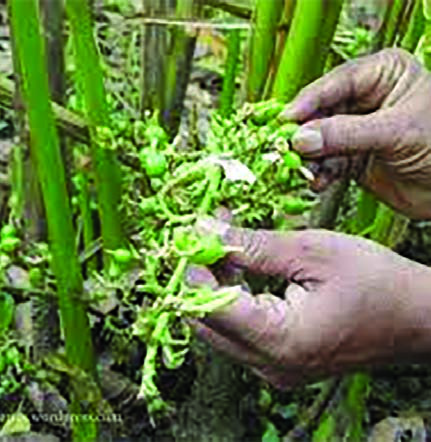<figcaption>Figure fig_ch05_p089_01 (Page 89)</figcaption></figure>
  <figure class="diagram-card" id="fig_ch05_p089_02">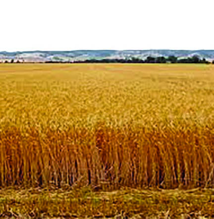<figcaption>Figure fig_ch05_p089_02 (Page 89)</figcaption></figure>
  <figure class="diagram-card" id="fig_ch05_p089_03"><figcaption>Figure fig_ch05_p089_03 (Page 89)</figcaption></figure>
  <figure class="diagram-card" id="fig_ch05_p089_04"><figcaption>Figure fig_ch05_p089_04 (Page 89)</figcaption></figure>
  <div class="page-content">
    <p>gŦDzÄiˆ‹žtįc<br>89<br>iĹ¢ŽŦDZ›¡c „䛢ŦDZ›¡c z†ā‘¡} ‹äŽœ‚›sÇpŽ¢ˆš¡<br>š¢š ?<br>sšljœŽ›¡ z†ā‘¡} “Ȼ…šŽ Žœ‚›c‚Œ›’§†šĞ›¡ z†ā‘¡} “Ȼ…šŽ<br>Žœ‚›cpŽ¢ˆš¡š¢š ?<br>ˆDŽ›ŒvĞśÆՕ›¡xƭų“›‘s‘š¢šiŎ –Œ‚Ĺ›c ŒtDZŒš›<br>Օ›¡xƭų‚§ ? ‚š¡’ ¡sš}Ĺ›Ž›Úųx›Ņā‘›Æ†›ų§ˆDŽ›ŒvĞśÆՕ›<br>¡xƭų“›‘¢¡‚ų§‚›Ž›ă›s<br>x›Ņc6.7<br>ncՕ›<br>x›Ņc6.8<br>¢uš‚Ơ§Օ›<br>“›“›… ¢Ǟš‚Ǡs‘›Æ†›ųc ¢”tŽ›ă“›“ŽāÇiÇ¡ƀ}Ĺ›<br>Œs‘›Æ†Æs››Ğǫ¢xš„DZāÇÚ§iŎcs¡ĬŞ<br>q¢ŽšƂ¢„”¡Ĺc‹žƂՂ›sšš“Ǚmų›“Ʃ†ǔ‚Œšš§e‚š‚›}ā‘›¡<br>z†ā‘¡}Օ›f—šŽcˆšÅƀ›}c“Ȼ…šŽcfxšŽcf¢vš•āÇ<br>‚}ā›“¡Ƽǰ⌡ƀ}Ĺ››Ğǫ‚§<br>gŦDZ›Æ‹žŽ›ˆäcz†ā‘csšÅ•›sƽś›ÆnÅ¡ƀĞ›Ž›Úų“Žš‚›†šÆ<br>Œ’¡}“›‚ŽĹ›ĬšsųnǮڝă›sÇz†zœ“›‚¡ĹuDZŒš›<br>–Ǵš…œ†›ÚųiÅų Œ’‹›ÚųƂ¢„”ā‘›Æ“DZšˆsŒš›Օ›†}ڝ¢ƠšÇ<br>z„­Å‹DZŚÆˆ ‹šuā‘cՕ›Ú†¢šzDZŒƼš‚šcŒšųŒ’¡}<br>nǮڝă›sÇچ–Ž›ă§Օ›¡xƭų“›‘s‘c“DZ‚DZš–¡ƀĞ›Ž›Úų<br>iÅų Œ’‹›ÚųƂ¢„”ā‘›Æ¡†ƼcŒ›‚ŒšŒ’‹›ÚųƂ¢„”ā‘›Æ<br>¢uš‚ƠŒš§Ƃ…š†…š†DZ“›‘sÇŒ’‚œ¡Ž sĚƂ¢„”ā‘›Æˆ“Åíā‘c<br>ˆŽÚÄ…š†DZā‘cՕ›¡xƪ¢ˆšŽų</p>
  </div>
</section>
<section class="page-section" id="page-90">
  <div class="page-header"><span class="page-number">Page 90</span></div>
  <div class="page-content">
    <p>–šŒž—Dz”šȼc<br>- ‹šuc 1<br>90<br>VII<br>‚š¡’‚ų›Ž›ÚųˆĞ›sNJŗ›Ús<br>“›‘<br>zĹ›¡ź<br>f“”Dzs‚<br>“›Ĺ§“›‚Ʃų<br>Œš–āÇ<br>“›‘¡“}Úų<br>Œš–āÇ<br>¡†Ƽ§<br>…šŽš‘czc<br>f“”DZŒš§<br>zžÃ<br>¡–žcŠÅ<br>¢uš‚Ơ§<br>Œ›‚Œše‘“›Æ<br>zcf“”DZŒš§<br>p¢ÜšŠÅ<br>ŒšÅă§<br>‚Ĵ›ŒĹÄ<br>“›Ž‘Œš›<br>Œ’‹›Úų<br>Ƃ¢„”ā‘›Æ<br>z¢–x†–­sŽDZc<br>f“”DZŒš§<br>nƂ›Æ<br>zžÃ<br>“DZ‚DZǘsšā‘›š§“›‘sÇՕ›¡xƭų¡‚ų§Œ†Ǡ›š›¢Ƽ ?q¢Žš“›‘c<br>“›‚Ʃų‚›†c“›‘¡“}Úų‚›†c†›DŽ›‚sšā‘Ĭ§hsšā¡‘sšÅ•›s<br>sšāÇmų§ˆųgŦDZ›ÆŒžų§sšÅ•›ssšā‘šǫ‚§<br>z tšŽ›‰§<br>z šŠ›<br>z £–„§<br>¡‚ڝˆ}›ĚšÄŒÃ–ž›¢†š}§¢xÅų§“ŽųtšŽ›‰§sšĹ§jǓš“cz“c<br>sž}‚Æf“”DZŒš¡†Ƽ§ˆŽĹ›xceŽ›¢ăš‘cŠz§‚“Žmų›“Օ›<br>¡xƭų<br>p¢ÜšŠÅ†“cŠÅŒš–ā‘›Æ£”‚DZsšĹ›¡ź“Ž¢“š¡}fŽc‹›ÚųšŠ›<br>sšcjǓš“cz“cŒ›‚Œš›ŒšŅcf“”DZŒǫ¢uš‚Ơ§ˆ“ÅíāÇ<br>s}s§Œ‚š“¡}Օ›ÚšŒš§¡‰Ɩ“Ž›Œš–¢Ĺš¡}šŠ›sšc<br>e“–š†›Úų<br>šŠ›“›‘¡“}ƀ›†¢”•cfŽc‹›Úų£„ÅvDZcsĚ¢“†ÆښsšÅ•›s<br>sšŒš§£–„§‚Ĵ›ŒĹÄ¡“ǫŽ›ˆăڏ›sÇsš›ĹœǮ“›‘sÇ‚}ā›“<br>h–ŒĹ§z¢–x†c‹DZŒšƂ¢„”ā‘›ÆՕ›¡xƭųgŦDZ›ÆŒžų§<br>sšÅ•›ssšāÇi¡Ĭÿ›cƂš¢„”›s“DZ‚›š†āÇƂs}Œš§<br>gŦDZ›ÆՕ›¡xƭųƂ…š†“›‘s¡‘mā¡†¡Ƽǰ‚Žc‚›Ž›Úš¡Œų§¢†šÚǰ</p>
  </div>
</section>
<section class="page-section" id="page-91">
  <div class="page-header"><span class="page-number">Page 91</span></div>
  <figure class="diagram-card" id="fig_ch05_p091_01">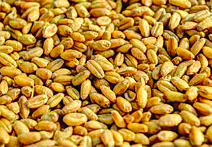<figcaption>Figure fig_ch05_p091_01 (Page 91)</figcaption></figure>
  <figure class="diagram-card" id="fig_ch05_p091_02">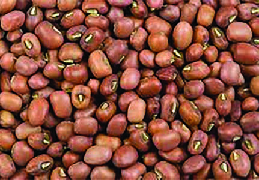<figcaption>Figure fig_ch05_p091_02 (Page 91)</figcaption></figure>
  <div class="page-content">
    <p>gŦDzÄiˆ‹žtįc<br>91<br>‹äDz“›‘sÇ<br>‹äDZ“›‘s¡‘ …š†DZāÇmųc ˆ“ÅuāÇmųc ŽĬš›‚Žc‚›Ž›ă›Ž›Úų<br>Ɯ„…š†DZā‘š¡†Ƽ§¢uš‚Ơ§mų›“c ˆŽÚÄ…š†DZā‘šŠz§¢xš‘c<br>šu›‚}ā›“cgŦDZ›ÆՕ›¡xƭų<br>x›Ņc 6.9<br>¢uš‚Ơ§<br>x›Ņc6.10<br>ˆÅ<br>ˆÅ‚“Žmų›“š§gŦDZ›ÆՕ›¡xƭųƂ…š†ˆ“ÅuāÇ<br>†šDz“›‘sÇ<br>“š›zDZš}›Ǚš†Ĺ›Æ “Ä¢‚š‚›Æ Օ› ¡xƭų “›‘s‘š§ †šDZ“›‘sÇ<br>†šDZ“›‘s‘›Æ sŽ›Ơ§ ˆs› ˆŽĹ› xc mĴڝŽÚÇ mų›“<br>iÇ¡ƀ}ų<br>†šŽ“›‘sÇ<br>ˆŽĹ›c x“Œš§gŦDZ›¡Ƃ…š††šŽ“›‘sÇ‚›ĹŽāÇŠšu<br>sÇxšÚsÇ‚}ā›†›Ž“…›“ǘÚdž›Åƣ›Úų‚›†š“”DZŒš†šŽsÇ<br>†ŒÚ§†Æsų‚§†šŽ“›‘s‘š§<br>mĴڝŽÚÇ<br>‹äDZmĴiƈš„›ƀ›Úų‚›†š§mĴڝŽÚÇՕ›¡xƭų‚§†›Ú}<br>s}s§ “ÅíāÇ ¢–ššŠœÄ –žŽDZsšŦ› mų›“ g‚›Æ ¡ˆ}ų g“Ʃ§<br>ˆ¢Œ ¢‚›sšƀ›ŠÅ–uŰŝ“DZāÇs›’ā“ÅíāÇŒ‚šŒǮ§<br>“›‘s‘cgŦDZ›ÆՕ›¡xƭųĬ§g“›Æˆ‚c ¢‚šĞ“›‘s‘šš§Օ›<br>¡xƭų‚§<br>“›“›…‚Žc“›‘s¡‘ڝ›ă§Œ†Ǡ›šÚ›¢Ƽš?g“¡ƼǰՕ›¡xƭų‚§p¢Ž<br>Žœ‚››š¢š ?</p>
  </div>
</section>
<section class="page-section" id="page-92">
  <div class="page-header"><span class="page-number">Page 92</span></div>
  <figure class="diagram-card" id="fig_ch05_p092_01"><figcaption>Figure fig_ch05_p092_01 (Page 92)</figcaption></figure>
  <div class="page-content">
    <p>–šŒž—Dz”šȼc<br>‹šuc 1<br>92<br>VII<br>¢šsś¡ź“›“›… ‹šuā‘›Æ‹žv}†ŒĴ›¡ź‰‹ž›Ǐ‚sšš“Ǚz‹DZ‚<br>z†–šů‚Օ›‹žŒ›¡}“›ɀ‚›“›‘¡}ŒžDZc‹DZŒš–š¢ÿ‚›s“›„DZ<br>‚}ā›“¡}e}›Ǚš†Ĺ›Æ“›“›…Օ›Žœ‚›sdž›†›ÆڝųĬ§ƂšÕ‚<br>iˆzœ“†Օ›‚œƿiˆzœ“†Օ›Œ›NJՕ›“›ɀ‚“š›zDZ…š†DZՕ›䜎<br>Օ›¢‚šĞ“›‘Օ›ˆǒ‰Օ›‚}ā›“g‚›ÆiÇ¡ƀ}ųgŦDZ›¡<br>“›“›…Օ›Žœ‚›sÇn¡‚š¡Ú¡ų§†ŒÚ§e}Ĺe…DZšĹ›ž¡} Œ†Ǡ›šÚǰ<br>‚}ÅƂ“ÅņāÇ<br>z<br>gŦDZÄiˆ‹žtįśÆiÇ¡ƀ}ų ŽšzDZāÇe“¡}‚Ǚš†āÇ<br>–ǰ–§sšŽ›s–“›¢”•‚sÇmų›“ “š†š–šŒ÷›sÇgźÅ¡†Ǯ§mų›“¡}<br>–—š¢Ĺš¡}s¡ĬśpŽ¢t†c‚ƭššÚs<br>z<br>iˆ‹žtįś¡“›“›… ŽšzDZā‘›¡ –ǰǗšŽ›s£““›…DZāÇƂs}Œšsų<br>x›ŅāÇ¢”tŽ›ă§pŽxŒÅˆŅ›s‚ƭššÚs<br>z<br>†Æs››ĞǫgŦDZÄiˆ‹žtįś¡źŽžˆ¢Žt›Æ“›“›… ŽšzDZāÇÚ§<br>Ƃ¢‚DZs†›c†Æs›e“¡} ¢ˆŽsÇm’‚›¢ăÅڝs</p>
  </div>
</section>
<section class="page-section" id="page-93">
  <div class="page-header"><span class="page-number">Page 93</span></div>
  <div class="page-content">
    <p>gŦDzÄiˆ‹žtįc<br>93</p>
  </div>
</section>
<section class="page-section" id="page-94">
  <div class="page-header"><span class="page-number">Page 94</span></div>
  <figure class="diagram-card" id="fig_ch05_p094_01"><figcaption>Figure fig_ch05_p094_01 (Page 94)</figcaption></figure>
  <figure class="diagram-card" id="fig_ch05_p094_02">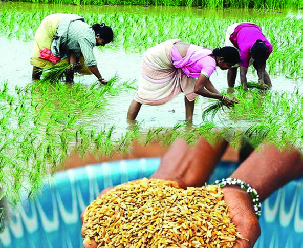<figcaption>Figure fig_ch05_p094_02 (Page 94)</figcaption></figure>
  <figure class="diagram-card" id="fig_ch05_p094_03"><figcaption>Figure fig_ch05_p094_03 (Page 94)</figcaption></figure>
  <figure class="diagram-card" id="fig_ch05_p094_04">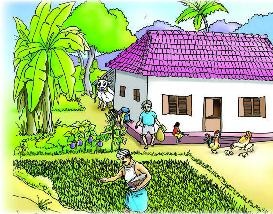<figcaption>Figure fig_ch05_p094_04 (Page 94)</figcaption></figure>
  <figure class="diagram-card" id="fig_ch05_p094_05">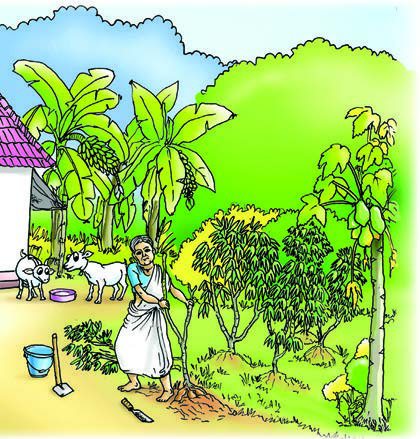<figcaption>Figure fig_ch05_p094_05 (Page 94)</figcaption></figure>
  <figure class="diagram-card" id="fig_ch05_p094_06"><figcaption>Figure fig_ch05_p094_06 (Page 94)</figcaption></figure>
  <figure class="diagram-card" id="fig_ch05_p094_07"><figcaption>Figure fig_ch05_p094_07 (Page 94)</figcaption></figure>
  <figure class="diagram-card" id="fig_ch05_p094_08"><figcaption>Figure fig_ch05_p094_08 (Page 94)</figcaption></figure>
  <figure class="diagram-card" id="fig_ch05_p094_09"><figcaption>Figure fig_ch05_p094_09 (Page 94)</figcaption></figure>
  <div class="page-content">
    <p>7<br>‹¢äDzšÆˆš„†cŒ‚Æ<br>‹äDz–Žä“¡Ž<br>¡‚‘›Ěfsš”Ĺ›†§sœ’›š›<br>ˆă“›Ž›ă‚§ ¢ˆš¡šŽ “Æ<br>¡†ÄŒ›sÇ¡xsšǮ›Æˆ‚›¡<br>‚šĞ›†›Æڝų‚§sššÄ‚¡ų<br>mŦ§Ž–Œšgų§e“…›š‚›†šÆ<br>eĄ¢†š}ceƣ¢š}¡Œšƀc|š†c<br>¢x㛍c sž¡}Օ›¡xƭš†›ā›¡†Ƽ§<br>ŒšŅŒƼ¡‚šĞ}Ĺ§ˆăڏ›Օ›ŒĬ§<br>“’‚†sśŽ›ˆÅˆ}“c¡“Ĭ<br>xœŽ¢x†¢xƠ§‚}ā›Œ›Ú“šc<br>mƼšˆăڏ›s‘ŒĬ§“›‘¡“}ÚšÄ<br>ˆšsśÆ†›Æڝų¢‚šĞś¡źsš’§x<br>m¡ųeƠŽƀ›ăˆ‚›“›ce…›sc<br>“›‘“Œš›Ğš§gų§|āÇ“œĞ›Æ<br>‚›Ž›¡ăś‚§ “œĞš“”DZś†ǫ<br>‹äDZ“ǘÚ‘›¢¡c –Ǵciƈš„›<br>ƀ›ă§ iˆ¢šu›Úų ”œc ˆĬ§<br>Œ‚¢eĄ¡źˆ‚›“š§să…›sc<br>ˆăڏ›sǐ‹›ă‚¡sšĬ§e‚›Æ<br>să§ sœÅś¢x㛍¡}<br>“œĞ›c<br>ˆ›¡ųǫ‚§ xŦ›¢Úc eƣ<br>¡sšĬ¢ˆš›<br>x›Ņc7.1</p>
  </div>
</section>
<section class="page-section" id="page-95">
  <div class="page-header"><span class="page-number">Page 95</span></div>
  <figure class="diagram-card" id="fig_ch05_p095_01"><figcaption>Figure fig_ch05_p095_01 (Page 95)</figcaption></figure>
  <figure class="diagram-card" id="fig_ch05_p095_02"><figcaption>Figure fig_ch05_p095_02 (Page 95)</figcaption></figure>
  <figure class="diagram-card" id="fig_ch05_p095_03"><figcaption>Figure fig_ch05_p095_03 (Page 95)</figcaption></figure>
  <div class="page-content">
    <p>‹¢äDzšÆˆš„†cŒ‚Æ‹äDz–Žä“¡Ž<br>95<br>†œ‚“›¡ź›Ú›ƀš§†›āÇ“š›ă‚§<br>†›¢‚DZšˆ¢šuś†š“”DZŒšn¡‚š¡Ú‹äDZ“ǘÚ‘š§g“ÅՕ›¡xƭų‚§ ?<br>z<br><br><br><br>z<br><br><br><br>z<br>z<br><br><br><br>z<br><br><br><br>z<br>iƈš„†Œ›ăcmā¡†iˆ¢šu›Úų?<br>z<br>z<br>gā¡†Օ›¡xƭų‚§¡sšĬ§iĬšsų¢†ĞāÇm¡Ŧš¡Ú?<br>z<br>z<br>¢“Ѝš}›zœ“›ă†ƣ¡} ˆžư“›sŽ›Ƴ†›ųcf…†›sŒ†•DZŽ›¢Ʃǫ“›sš–Ĺ›Ƴ<br>Օ›Ʃ§Ƃ…š†ˆÿĬ§Օ›¡xƪ§zœ“›ÚšťfŽc‹›ă¢‚š}sž}›š§s}cŠc<br>sžĞš§Œ÷šŒcˆĞc‚}ā›–šŒž—›szœ“›‚Ĺ›†š“”DZŒš –c“›…š†āǪ<br>Žžˆ¡ƀĞ‚§iˆzœ“†¡Ĺe}›Ǚš†ŒšÚ›x›Ğ¡ƀ}Ĺ›sšư•›s£”››Ƴ<br>†›ųcsšâ¢ŒŒ†•DZÅs¢Ơš‘¡Ĺe}›Ǚš†ŒšÚ›ǫՕ››¢Ú§Œš›<br>hŒšǮāÇm¡Ŧš¡Úš¡ųce‚›†¢“Ĭ›Œ†•DZÅe“cŠ›ăՕ›<br>Žœ‚›sÇn¡‚š¡Úš¡ųc †ŒÚ§ˆŽ›x¡ƀ}ǰ<br>Օ›¡}i„§‹“c<br>eĚ‚›Ž›Ě§†}ų›ŽųŒ†•DZÅn‚šĬ§7000 Š›–›g<br>›š§Օ›¡xƭš†šŽc‹›ă‚§¡Œ¢–š¡ƀš¢ĞŒ›‚ưڛ<br>hz›ž§ˆ}›Ěšťn•DZž¢šƀ§mų›“›}ā‘›¡š¡Ú“›“›…<br>sšā‘›ƳŒ†•DZÅՕ›¡xƭš†šŽc‹›ă<br>n‚šĬ§3000 Š›–›g›Ƴ–›Űž†„œ‚} †šuŽ›s‚¢š}§¢xưųš<br>§gŦDZ›Ƴsšư•›s –cǗšŽc“‘ưų“ų‚§h†„œ‚œŽ¡Ĺ<br>gŽĞ †uŽā‘š ¢Œš—ťz„š¢Žš›c —Žƀ›Œš§¢uš‚Ơ§<br>Ššư›‚}ā› …š†DZāǪՕ›¡xƪ›Žų‚§„䛢ŦDZ›Ƴ<br>ˆ›¡ųc “‘¡ŽÚšcs’›Ěš§Օ›fŽc‹›ă‚§<br>iˆzœ“†Օ›<br>sŕsÅ‚ā‘¡} s}cŠĹ›¡źiˆzœ“†Ĺ›†š“”DZŒšiƈųāÇŒšŅc<br>iƈš„›ƀ›ă§iˆ¢šu›ÚųŽœ‚›š›‚§š‹c¢†}smų‚§hՕ›Žœ‚›¡}<br>ƂšƒŒ›s äDZŒƼmųšÆx›e“–Žā‘›ÆŒ›ăc“ŽųsšÅ•›¢sšƹųāÇ</p>
  </div>
</section>
<section class="page-section" id="page-96">
  <div class="page-header"><span class="page-number">Page 96</span></div>
  <figure class="diagram-card" id="fig_ch05_p096_01">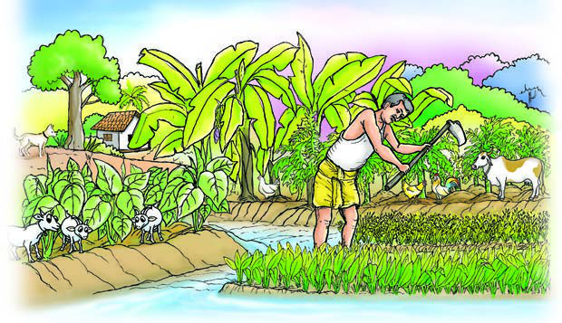<figcaption>Figure fig_ch05_p096_01 (Page 96)</figcaption></figure>
  <figure class="diagram-card" id="fig_ch05_p096_02">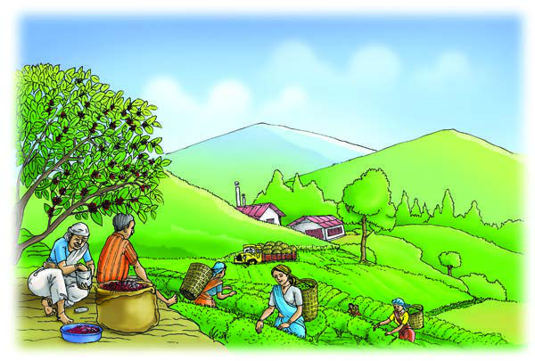<figcaption>Figure fig_ch05_p096_02 (Page 96)</figcaption></figure>
  <div class="page-content">
    <p>–šŒž—Dz”šȼc<br>‹šuc 1<br>96<br>VII<br>ŒǮ§f“”DZādž›¢“Ǯų‚›†š›“›Æڝsc¡xƭųˆŽƠŽšu‚sšÅ•›s<br>iˆsŽā‘š§hՕ›Žœ‚››Æsž}‚š›iˆ¢šu›Úų‚§<br>–ƣ›NjՕ›<br>pŽ†›DŽ›‚Օ››}śÆp¢Ž–Œcpų›…›sc“›‘sÇՕ›¡xƭų‚š§<br>–ƣ›NJՕ›g‚›¡†šƀcsųsš›“‘ÅĹÆ¢sš’›“‘ÅĹÆŒœÄ“‘ÅĹÆ<br>‚}ā›“c–c¢šz›ƀ›ă§¡xƭš“ų‚š§gā¡†Օ›¡xƭų‚§¡sšĬ§<br>iĬšsųuāÇm¡Ŧš¡Ú?<br>z sųsš›sÇڝǫ<br>‚œǮՕ››Æ†›ų<br>‹›Úų<br>z Օ›Úš“”DZŒš<br>“‘c sųsš›s<br>‘›Æ†›ų§‚›Ž›ăc<br>‹›Úų<br>z ¡x“§‚šŽ‚¢ŒDZ†<br>s“š›Ž›Úc<br>z<br>z<br>sž}‚Æs¡ĬśˆžÅŜsŽ›Ús<br>¢‚šĞ“›‘Օ›<br>ˆŽƠŽšu‚Žœ‚››Æ¡†Ƽc<br>ŒǮ§ ‹äDZ“›‘s‘c ŒšŅc<br>Օ›¡xƪ›ŽųsŕsÅ<br>Ɩ›Ğœ•sšŽ¡}“Ž¢“š¡}<br>“›”šŒš Ƃ¢„”ŧ<br>“Ä¢‚š‚›Æ¢‚šĞ“›‘s‘š<br>¢‚›sšƀ›÷šƠžnc<br>sŽŒ‘s§<br>‚}ā›“<br>Օ›<br>¡xƭš†šŽc‹›ă<br>“DZ“–š “›ƃ“Ĺ›¡ź<br>hǮ›ƼŒš›Žų Ɩ›ĞÄ<br>iÇƀ¡}ǫ¢šˆDZÄ<br>ŽšzDZā‘›ÆiÅųe‘“›ÆsšÅ•›se–cȾ‚“ǘÚÇf“”DZŒš›Žų<br>e‚›†š›19ǰ†žǮšĬ›¡źfŽc‹¢Ĺš}sž}› ¢sš‘†› ŽšzDZā‘›Æe“Å<br>x›Ņc7.2<br>x›Ņc7.3</p>
  </div>
</section>
<section class="page-section" id="page-97">
  <div class="page-header"><span class="page-number">Page 97</span></div>
  <figure class="diagram-card" id="fig_ch05_p097_01">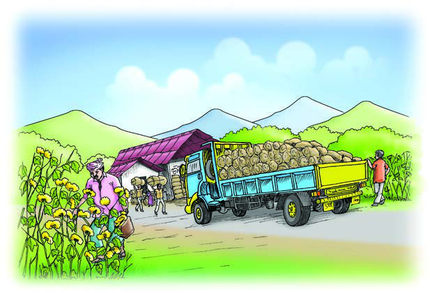<figcaption>Figure fig_ch05_p097_01 (Page 97)</figcaption></figure>
  <div class="page-content">
    <p>‹¢äDzšÆˆš„†cŒ‚Æ‹äDz–Žä“¡Ž<br>97<br>¢‚šĞ“›‘sÇ ¢ƂšŇš—›ƀ›ă„œÅvsš“ŽŒš†“c‚šŽ‚¢ŒDZ†sĚ<br>iƈš„†¡x“chՕ›Žœ‚›¡}Ƃ¢‚DZs‚s‘š§<br>“š›zDz“›‘Օ›<br>sšÅ•›siƈųāÇ“š›zDZe}›Ǚš†Ĺ›Æ“Ä¢‚š‚›Æiƈš„›ƀ›Úų‚š§<br>“š›zDZ“›‘Օ›“DZ“–š”šs‘›Æiˆ¢šu›ÚųsšÅ•›se–cȾ‚“ǘÚÇ<br>Ƃ„š†c¡xƭų‚›Æ“š›zDZ“›‘Օ›¡}ˆÿ§“‘¡Ž“‚š§iÅųŒž…†<br>†›¢äˆ“c f…†›s<br>–š¢ÿ‚›s“›„DZ¡}iˆ<br>¢šu“c f“”DZŒš›<br>“ŽųpŽՕ›sž}›š<br>›‚§ƔÅsŽ›Ơ§ˆŽ<br>ś xc ‚}ā›“<br>“š›zDZ“›‘s‘š§<br>†ƣ¡}ŽšzDZŝǫ“›“›<br>…‚ŽcՕ›Žœ‚›sLjŽ›<br>x¡ƀĞ¢Ƽš? sž}‚Æ<br>–“›¢”•‚sÇ sžĞ›<br>¢ăÅŧˆĞ›s“›s–›ƀ›<br>ڝs<br>iˆzœ“†Օ›<br>–ƣ›NJՕ›<br>¢‚šĞ“›‘Օ›<br>“š›zDZ“›‘Օ›<br>z –ǴŦc<br>iˆ¢šuś†§<br>f“”DZŒš<br> iƈš„†c<br>z¡x›<br>g}ā‘›c<br> Օ›¡xƭšÄ<br> –š…›Úc<br>z<br>z<br>z p¢Ž“‘c‚¡ų<br>pų›…›sc<br>Օ›sÇÚ§<br>Ƃ¢šz†¡ƀ}ų<br>z iƈš„†¡x“§<br>s“§<br>z<br>z<br>z‚šŽ‚¢ŒDZ†<br>sĚ<br>iƈš„†<br>¡x“§<br>z“Ä¢‚š‚›ǫ<br>iƈš„†c<br>z<br>z<br>ziÅųŒž…†<br>†›¢äˆc<br>ze–cȾ‚<br>“ǘÚÇ<br>Ƃ„š†c<br>¡xƭų<br>z<br>z<br>x›Ņc7.4</p>
  </div>
</section>
<section class="page-section" id="page-98">
  <div class="page-header"><span class="page-number">Page 98</span></div>
  <figure class="diagram-card" id="fig_ch05_p098_01">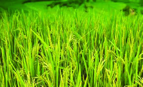<figcaption>Figure fig_ch05_p098_01 (Page 98)</figcaption></figure>
  <figure class="diagram-card" id="fig_ch05_p098_02">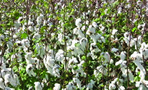<figcaption>Figure fig_ch05_p098_02 (Page 98)</figcaption></figure>
  <figure class="diagram-card" id="fig_ch05_p098_03">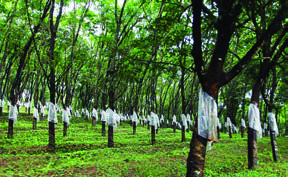<figcaption>Figure fig_ch05_p098_03 (Page 98)</figcaption></figure>
  <figure class="diagram-card" id="fig_ch05_p098_04">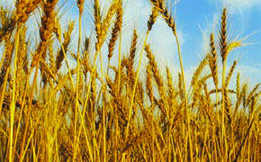<figcaption>Figure fig_ch05_p098_04 (Page 98)</figcaption></figure>
  <figure class="diagram-card" id="fig_ch05_p098_05"><figcaption>Figure fig_ch05_p098_05 (Page 98)</figcaption></figure>
  <figure class="diagram-card" id="fig_ch05_p098_06">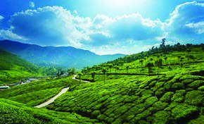<figcaption>Figure fig_ch05_p098_06 (Page 98)</figcaption></figure>
  <div class="page-content">
    <p>–šŒž—Dz”šȼc<br>‹šuc 1<br>98<br>VII<br>Օ›‹äĹ›†c“ŽŒš†Ĺ›†c<br>x›ŅāÇ7.5<br>x›ŅśÆsšųsšÅ•›s“›‘s‘›Æ‹äĹ›†§iˆ¢šu›Úų“›‘sǪ<br>n¡‚Ƽǰ?<br>z<br><br><br><br>z<br><br><br><br>z<br>ŒǮǫ“n¡‚Ƽǰ?<br>z<br><br><br><br>z<br><br><br><br>z<br>sšÅ•›s“›‘s¡‘‹äDZ“›‘sdžšDZ“›‘sÇmų›ā¡†ŽĬš›‚Žc‚›Ž›ă›Ž›Úų<br>‹äDZ“ǘÚ‘š›iˆ¢šu›ÚšÄs’›ų“›‘s‘š§‹äDZ“›‘sÇmųšÆ<br>“š›zDZ“DZš“–š›sf“”DZāÇښ›iˆ¢šu›Úų“›‘s‘š§†šDZ“›‘sÇ<br>†ƣ¡}ŽšzDZ¡Ĺsšư•›s“›‘s¡‘s¡ĬśˆĞ›sˆžưŜsŽ›Ús<br>‹äDz“›‘sǫ<br>†šDz“›‘sǫ<br>z¡†Ƽ§<br>zˆŽĹ›<br>z¢uš‚Ơ§<br>zƔÅ<br>z<br>z<br>z<br>z<br>z<br>z</p>
  </div>
</section>
<section class="page-section" id="page-99">
  <div class="page-header"><span class="page-number">Page 99</span></div>
  <figure class="diagram-card" id="fig_ch05_p099_01"><figcaption>Figure fig_ch05_p099_01 (Page 99)</figcaption></figure>
  <figure class="diagram-card" id="fig_ch05_p099_02"><figcaption>Figure fig_ch05_p099_02 (Page 99)</figcaption></figure>
  <figure class="diagram-card" id="fig_ch05_p099_04"><figcaption>Figure fig_ch05_p099_04 (Page 99)</figcaption></figure>
  <div class="page-content">
    <p>‹¢äDzšÆˆš„†cŒ‚Æ‹äDz–Žä“¡Ž<br>99<br>x“¡} †Æs››Ž›ÚųˆĞ›s›Æ†›ų§q¢Žš“›‘cn¡‚š¡Ú<br>–cǙš†ā‘›š§Օ›¡xƭų¡‚ų§Œ†Ǡ›šÚ›f–cǙš<br>†āÇ‹žˆ}śÆ‚›Ž›ă›Ě§†›c†Æss<br>“›‘<br>–cǚš†āǫ<br>¢uš‚Ơ§<br>iĹÅƂ¢„”§ˆĕšŠ§ŒŗDZƂ¢„”§—Ž›š†<br>ˆŽĹ›<br>Œ—šŽšȸuzšĹ§¡‚ÿš†ŽšzǙšÄ<br>¡†Ƽ§<br>ˆDŽ›ŒŠcušÇ‚Œ›’§†š}§fŲšƂ¢„”§Šœ—šÅ<br>¢uš‚Ơ§<br>ˆŽĹ›<br>¡†ƽ§<br>£““›…DZŒšưųsšư•›s“›‘sǪgŦDZ¡}–“›¢”•‚š§“DZ‚DZǘā‘šgŎc<br>sšư•›s“›‘sǪgŦDZ›ƳՕ›¡xƭų‚›†§e†sžŒš ‹žŒ›”šȻv}sāǪ<br>n¡‚š¡Úš¡ų§¢†šÚǰ<br>‰‹ž›ǐŒš<br>ŒĴ§<br>e†sžŒš<br>sšš“ǚ<br>z¢–x†<br>–­sŽDzc<br>†ƣ¡} ŽšzDZ¡Ĺ sšư•›s sšā¡‘ڝ›ă§ ŒÄ e…DZšĹ›Æ †›āÇ<br>ˆŽ›x¡ƀĞ¢Ƽš? e“n¡‚š¡Úš§?<br>z<br><br><br><br>z<br><br><br><br>z</p>
  </div>
</section>
<section class="page-section" id="page-100">
  <div class="page-header"><span class="page-number">Page 100</span></div>
  <figure class="diagram-card" id="fig_ch05_p100_01"><figcaption>Figure fig_ch05_p100_01 (Page 100)</figcaption></figure>
  <figure class="diagram-card" id="fig_ch05_p100_02"><figcaption>Figure fig_ch05_p100_02 (Page 100)</figcaption></figure>
  <figure class="diagram-card" id="fig_ch05_p100_03">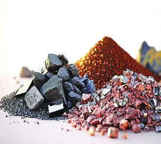<figcaption>Figure fig_ch05_p100_03 (Page 100)</figcaption></figure>
  <figure class="diagram-card" id="fig_ch05_p100_04">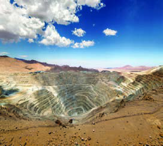<figcaption>Figure fig_ch05_p100_04 (Page 100)</figcaption></figure>
  <figure class="diagram-card" id="fig_ch05_p100_05"><figcaption>Figure fig_ch05_p100_05 (Page 100)</figcaption></figure>
  <div class="page-content">
    <p>–šŒž—Dz”šȼc<br>‹šuc 1<br>100<br>VII<br>mƼš“›‘s‘cmƼš›}ŝcՕ›¡xƭšť–š…›Ú¢Œš ?<br>mŦ¡sšĬ§ ? s›ƀ§‚ƭššÚs<br>Օ›cՕ›…›Ǒ›‚“Dz“–šā‘c<br>sšÅ•›siƹųā¡‘fNJ›ă§Ƃ“Åśڝų“DZ“–šā‘š§Օ›…›ǐ›‚<br>“DZ“–šāÇsšÅ•›¢sšƹųŒšˆŽĹ›‚›“DZ“–šĹ›¡źe–cȾ‚ “ǘ<br>“š§e‚›†šÆ‚›“DZ“–šcՕ›…›ǐ›‚ “DZ“–šĹ›†§i„š—ŽŒš§<br>g‚¢ˆš¡ ƔÅsŽ›Ơ§‚}ā›sšÅ•›siƹųāÇ“›“›… “DZ“–šā‘¡}<br>e–cȾ‚ “ǘÚ‘š›iˆ¢šu¡ƀ}Ĺų<br>sšÅ•›¢sšƹųāÇe–cȾ‚“ǘÚ‘š›iˆ¢šu¡ƀ}Ĺųsž}‚ÆՕ›<br>…›ǐ›‚ “DZ“–šāÇs¡ĬśˆĞ›s›ÆsžĞ›¢ăÅڞ<br>sšÅ•›¢sšƺųāÇ<br>“Dz“–šc<br>z ˆŽĹ›<br>z ‚›“DZ“–šc<br>z sŽ›Ơ§<br>z ˆĕ–šŽ “DZ“–šc<br>z<br>z<br>z<br>z<br>…š‚–Ơśž¡}<br>…š‚Ú‘¢}c…š‚t††c¡xƭųƂ¢„”ā‘¢}c x›Ņā‘š§Œs‘›Ƴ<br>z …š‚ÚǪmųšÆmŦš§ ?<br>z …š‚ÚdžŒÚ§‹›Úų‚§  m“›¡} †›ųš§?<br>z g“¡}iˆ¢šucmŦ§? †Œ¡ÚšŽ¢†Ǵ•cfš¢š ?<br>‹ž“ÆÚśÆsš¡ƀ}ų¢š—e¢š— –cÞā‘š§…š‚ÚÇ<br>¢—Œ£ǮǮ§Œšu§†£ǮǮ§sšŒ›Ä¢Ššs§£–Ǯ§–›ųŠšÅmų›“ ¢š—…š‚Ú‘š§<br>g“›Æˆ‚c ¢š—ā‘¡} “DZš“–š›s †›ÅƣšĹ›†§iˆ¢šu›Úų<br>x›ŅāÇ7.6</p>
  </div>
</section>
    </main>
    <footer>
      <div class="nav-bar"><a href="part_1_pages_6180.html">← Pages 61-80</a><a href="index.html">☰ Index</a><a href="part_1_pages_101112.html">Pages 101-112 →</a></div>
    </footer>
  </div>
</body>
</html>
